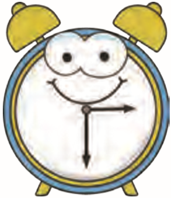
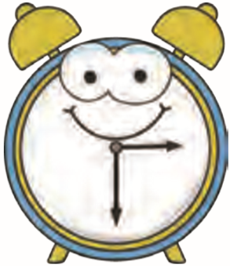

2ــ فاصله ی شهر تهران تا قم 123 کیلومتر است. از قم تا کاشان نیز 123 کیلومتر است.
فاصله ی تهران تا کاشان چند کیلومتر است؟
 



حل مسئله
در مسئله های زیر فقط نوع عمل را تشخیص دهید. (به دست آوردن جواب لازم نیست.) 1ــ هر سال 365 روز دارد. هر روز 24 ساعت است. هر سال چند ساعت است؟ می توانیم به طور ساده بگوییم: 300 تا 20 تا چقدر می شود؟ فاصله ی شهرها را به طور تقریبی بیان کنید؛ برای مثال، 100 کیلومتر.
3ــ بلندترین قله ی ایران «دماوند» نام دارد و 5671 متر است. بلندترین قله ی روی زمین «اورست» نام دارد و
8848 متر است. قله ی اورست چند متر از قله ی دماوند بلندتر است؟
8848 متر است. قله ی اورست چند متر از قله ی دماوند بلندتر است؟
4ــ در روزهای 10 و 11 فروردین ماه 1358 مردم ایران به جمهوری اسلامی رأی دادند. تعداد رأی های سه
صندوق به ترتیب 1895 ، 2834 و 4539 بوده است. چند رأی به این سه صندوق ریخته شده است؟
صندوق به ترتیب 1895 ، 2834 و 4539 بوده است. چند رأی به این سه صندوق ریخته شده است؟
گاهی استفاده از عددهای تقریبی به شما کمک می کند که راه حل یک مسئله را تشخیص دهید.
پس از اینکه راه حل مسئله را تشخیص دادید، می توانید عدد های اصلی را به کار ببرید.
پس از اینکه راه حل مسئله را تشخیص دادید، می توانید عدد های اصلی را به کار ببرید.